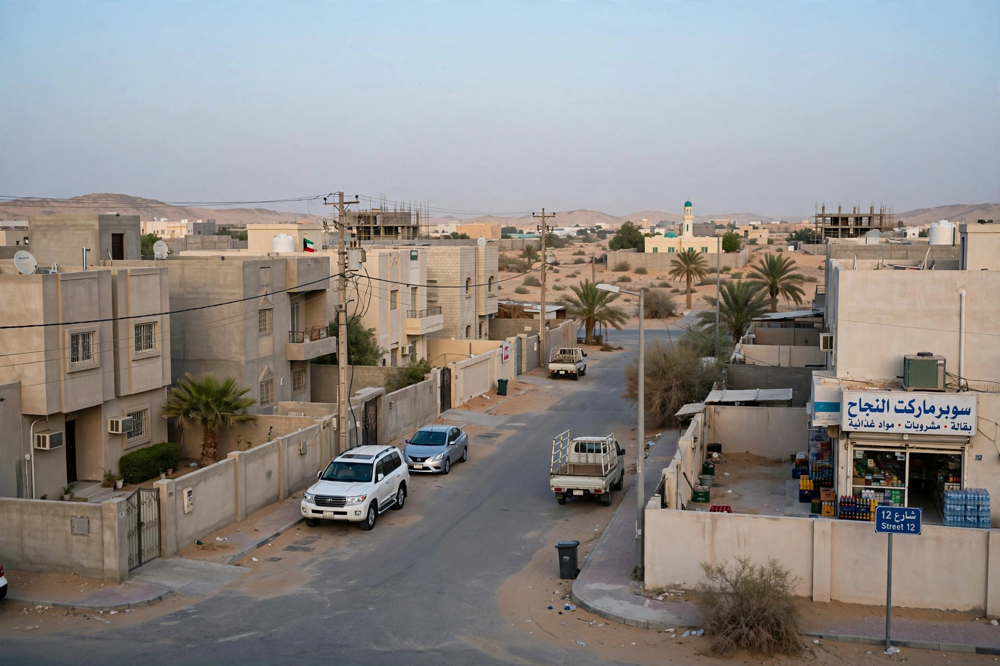
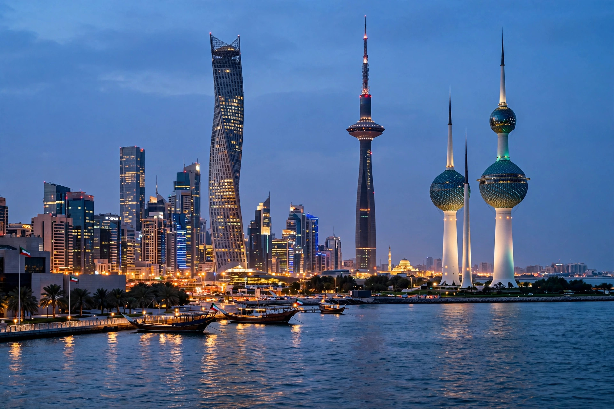

Bidoon

| Bidoon | |
|---|---|
| Region | Kuwait (also smaller populations elsewhere in the Gulf) |
| Estimated population | Roughly 100,000 in Kuwait (estimates vary) |
| Status | Stateless; officially classified by Kuwait as "illegal residents" |

The Bidoon (Arabic: bidūn jinsīyah, "without nationality") are a stateless Arab minority in Kuwait, numbering roughly one hundred thousand. Many descend from nomadic Bedouin tribes whose members failed — or were unable — to register for Kuwaiti nationality when it was first codified around independence in 1961; others were long-term residents, including people who served in Kuwait's army and police. Because they lack citizenship, the Bidoon are a paradigmatic case under the 1954 Convention Relating to the Status of Stateless Persons, though Kuwait is not a party to that convention.
Status and conditions
After the 1990–91 Gulf War, during which some Bidoon were accused of collaboration with the Iraqi occupation, Kuwait reclassified the community from prospective citizens to "illegal residents". Without nationality, Bidoon have historically lacked access to civil documentation such as birth and marriage certificates, state education and healthcare, public-sector employment, and travel documents — obstacles that transmit statelessness across generations and engage the right to a nationality. A government body, the Central System for the Remedy of the Situation of Illegal Residents, administers their files and has issued some identity cards and services, and a minority have obtained foreign passports — controversially including Comorian "economic citizenship" documents. Parliament has repeatedly debated bills that would grant civil rights or naturalisation to parts of the community, and small-scale protests by Bidoon demanding citizenship occurred notably in 2011 and 2019.
See also
Convention Relating to the Status of Stateless Persons · Right to a nationality · Rohingya people
Categories: Stateless people · Ethnic groups in Kuwait · Human rights in Kuwait